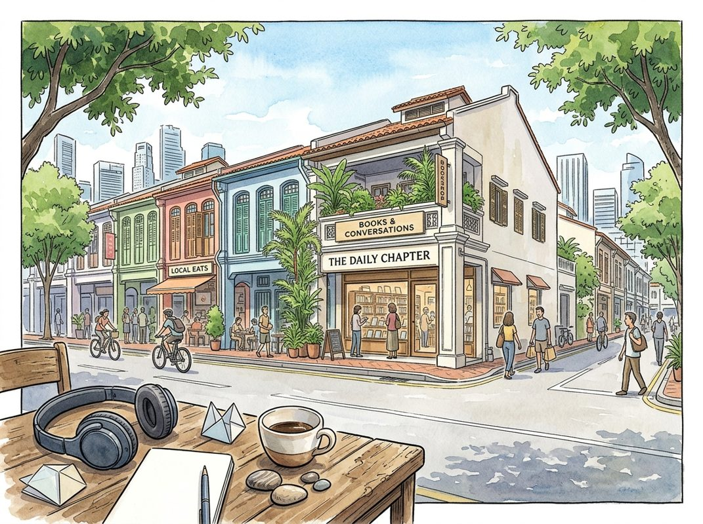

9/13

播客简报 2026-09-13
今日更新
Luca Ferrari on Building Bending Spoons: Extreme Ownership, Talent Science & Relentless Simplification
来源：David-Senra
原链接：https://davidsenra.com/episode/luca-ferrari
状态：已读部分音频 transcript
这期播客深入探讨了Bending Spoons创始人Luca Ferrari的极致创业哲学，揭示了他如何通过“成为世界最佳”的宏大愿景、对人才的科学化识别与培养，以及极简高效的管理模式，在非传统创业环境中打造出一家卓越公司。适合所有追求卓越、敢于挑战传统思维的创业者和管理者。
- 极致抱负：构建“史上最佳公司”的宏大愿景：Luca Ferrari的创业哲学核心是追求极致。他的人生信条是，要么全力以赴做到最好，要么就尽量不做或只做最低限度的投入。这种两极分化的态度体现在他生活的方方面面，无论是与妻子的关系，还是创办Bending Spoons。他坦言，公司目标是成为“史上最佳公司”，尽管这听起来狂妄且几乎不可能实现，但正是这种抱负带来了指数级的回报：更深的满足感、更快的学习曲线和更丰厚的财务成果。他认为，有限的时间和精力应集中在少数几个能全力以赴的领域，这不仅更令人兴奋、更有趣，也能吸引到更优秀的人才共同奋斗。
- 去创始人化：在独立环境中从第一性原理出发：Bending Spoons的文化强调公司本身是中心，而非创始人。Luca认为，过度强调创始人会分散员工对公司使命的注意力，重要的是每个人的贡献和发展轨迹。公司最初在哥本哈根起步，后迁至米兰，这些地方在十多年前并非创业热土，缺乏成熟的生态系统和导师资源。这种地理上的“孤立”反而成为一种优势，迫使他们不能模仿他人，必须从第一性原理出发，通过实验和创新来解决问题。虽然这可能导致更多错误和更长的摸索期，但也让他们得以发现独特的见解和方法，从而避免平庸，实现差异化竞争。
- 从失败中汲取教训：人才至上与经验的局限：Luca的第一次创业Everytale（2010-2013年，一个利用AI自动生成日记的应用）以商业失败告终，但从中获得了宝贵的经验。他发现，在数字技术领域，团队中表现最佳的员工，其贡献能轻松达到中等水平员工的十倍，这揭示了人才生产力范围的巨大差异。更重要的是，这位表现最佳的员工往往是团队中经验最少的人之一。这让Luca深刻认识到，经验固然有价值，但远不如人们普遍认为的那么关键。真正聪明且充满热情的个体，即使缺乏经验，也往往能创造出同等甚至更多的价值。
- 颠覆传统人才观：为何偏爱年轻毕业生：基于Everytale的教训，Bending Spoons在招聘上采取了颠覆性的策略：偏爱年轻毕业生而非经验丰富的管理者。Luca认为，大多数工作，尤其在科技行业，并非“火箭科学”，不需要深厚的理论知识或冗长的履历，而更需要聪明的头脑和追求卓越的渴望。此外，技术和客户期望变化极快，导致过去的经验很快就会过时，甚至可能产生负面影响（例如，长期处于低标准环境会使人平庸，或在政治化组织中学会取悦而非优化）。因此，与其依赖可能过时或有害的经验，不如优先选择拥有优秀头脑和强烈成长意愿的“人才”。
- 人才科学：系统化识别高潜力人才：那么，如何在缺乏经验的情况下识别高潜力人才？Bending Spoons为此投入了大量精力，发展出一套“人才科学”。他们广泛利用测试，设计出能有效衡量应聘者心智能力和潜力的工具。在某些申请中，他们会分析超过100个不同的信号，包括学术记录、个人项目等，以预测候选人的长期潜力。这种方法类似于量化对冲基金通过分析成百上千个微弱但聚合起来具有强大预测力的信号来做投资决策。通过这种科学化、系统化的方法，Bending Spoons能够精准地吸引和识别那些具有卓越天赋和巨大成长空间的人才。
历史精选
Google Part I: Origins of Search
来源：Acquired
原链接：https://www.acquired.fm/episodes/google
状态：已读网页 transcript
本期播客深入剖析了谷歌的诞生，揭示了其并非偶然的成功，而是源于创始人拉里·佩奇和谢尔盖·布林早期非凡的抱负、颠覆性的技术创新（PageRank），以及在分布式计算和廉价硬件上构建可扩展基础设施的独特能力。它解释了为何谷歌在众多先行者中脱颖而出，成为互联网的“前门”，并最终建立起史上最赚钱的商业帝国。本期节目适合所有对互联网历史、技术创新、创业故事以及谷歌崛起之谜感兴趣的中文读者。
- 谷歌的崛起：从AI时代回溯其非凡起点：Acquired播客以人工智能作为我们时代最重大的技术浪潮开篇，指出要理解AI，就必须理解其技术基石——谷歌。谷歌（现Alphabet）不仅是过去25年互联网的“前门”，更是美国最赚钱的公司，其净利润超越苹果、微软等巨头，在搜索市场占据90%的垄断地位。然而，谷歌并非首个搜索引擎，而是众多先行者中的“后来者”。本期节目旨在回答核心问题：谷歌为何能成功？它如何从一个巧妙的技术和优秀产品，发展成为史上最伟大的商业实体？表面上看，简洁的用户界面、以用户为中心的设计和高质量的快速搜索是其成功要素，但深层原因远不止于此。播客强调，谷歌的成功并非偶然，而是由一系列关键的技术、商业决策和市场时机共同铸就。
- 佩奇与布林的早期抱负：并非“书呆子”的创业家：拉里·佩奇和谢尔盖·布林的成长背景为他们的未来奠定了独特基础。拉里·佩奇（1973年生）的父母都是计算机科学教授，他从小耳濡目染，6-7岁时随父亲在斯坦福大学度过学术休假，硅谷的氛围给他留下深刻印象。谢尔盖·布林（1973年生）出生于苏联莫斯科的犹太家庭，父亲是数学教授，母亲是NASA研究员。他16岁高中毕业，19岁获得马里兰大学数学与计算机科学双学位，并在Wolfram Research实习。播客特别指出，外界常将他们误解为不谙世事的学术“书呆子”，但实际上，两人从一开始就抱有巨大的野心，渴望建立改变世界的公司，并深知要将发明变为现实，商业和创业是不可或缺的载体。他们在1995年于斯坦福大学相遇，由安娜·帕特森促成，并在门洛帕克的英国银行家俱乐部首次见面，查尔斯·施瓦布甚至为他们的首次“约会”买单。两人迅速建立起一种罕见的、平等的、充满火花的合作关系，这种伙伴关系贯穿了谷歌的整个发展历程。
- PageRank的诞生：从网页标注到权威性排序：PageRank的起源并非直接为了搜索引擎。1995-96年，拉里·佩奇与谢尔盖·布林最初的博士论文设想是构建一个去中心化的网页标注系统，允许用户直接在网页上添加评论，以改进雅虎等人工目录的模式。然而，他们很快意识到，对于大型网站，如何筛选和排序海量的用户评论成为难题，需要一种机制来区分“精华”与“糟粕”，即对评论进行“排名”。这一思考促成了他们的关键飞跃：将排名思想应用于网页本身。灵感来源于学术界的论文引用排名系统——一篇论文的重要性取决于有多少其他重要论文引用了它。在网络世界中，超链接被视为学术引用的等价物，而链接中的“锚文本”则提供了额外的元数据，描述了链接者对目标网页的看法。通过这种方式，他们构建了名为“BackRub”（意为反向链接）的系统。由于当时的网页架构只显示出站链接，要计算反向链接，他们必须爬取整个互联网并反向追踪。这在1996-97年是可行的，因为互联网规模尚小，足以作为研究项目进行。斯科特·哈桑用Python编写了最初的爬虫，BackRub系统很快就展现出惊人的效果，能够有效区分网页的权威性，将高质量内容置于顶部。
- 出售失败与谷歌公司的成立：商业模式的冲突：BackRub技术初具雏形后，拉里和谢尔盖最初的打算是将其出售给现有的搜索引擎公司，赚取一笔钱后继续完成博士学业。1997年春夏，他们与Infoseek、Lycos、Excite、Yahoo等公司进行了接触。与Excite的谈判最为深入，甚至由著名风投文诺德·科斯拉（Vinod Khosla）促成了一项价值约100万美元的授权协议。然而，在最终演示中，Excite的CEO拒绝了这项技术。原因在于，BackRub的卓越相关性意味着用户能迅速找到所需信息并离开网站，这与Excite当时以横幅广告为主要收入来源的商业模式（依赖用户在网站上停留更长时间以增加页面浏览量）相冲突。谷歌的技术对他们而言是“反战略”的。雅虎也曾拒绝了100万美元收购PageRank的提议。这次失败的出售经历让拉里和谢尔盖意识到，这些公司并不真正理解搜索的价值，他们更关注成为“门户”以吸引眼球。于是，1997年秋，他们决定自己动手。项目更名为“Google”（源于数学术语“Googol”，意为10的100次方，因拼写错误而得名），谢尔盖设计了彩虹色的初代Logo。到1998年春，google.com每天处理1万次查询，巨大的流量甚至导致斯坦福大学的网络不堪重负，促使校方建议他们将项目商业化。
- 疯狂的种子轮融资与早期基础设施挑战：在斯坦福大学的敦促下，拉里和谢尔盖寻求计算机科学教授戴夫·切里顿（Dave Cheriton）的建议。切里顿将他们引荐给太阳微系统（Sun Microsystems）联合创始人安迪·贝克托尔斯海姆（Andy Bechtolsheim）。1998年8月，安迪在切里顿家中匆匆听完演示后，当即开出了一张10万美元的支票，收款人写着“Google Inc.”，而此时谷歌公司尚未注册成立。这张支票成为了谷歌公司成立的催化剂，迫使他们迅速完成公司注册、知识产权转移和银行开户。随后，戴夫·切里顿追加了10万美元投资，前网景（Netscape）高管拉姆·施里拉姆（Ram Shriram）投资25万美元，并引荐了亚马逊创始人杰夫·贝佐斯。贝佐斯也投资了25.2万美元，使得谷歌的种子轮融资总额达到100万美元，投后估值1000万美元。贝佐斯的这笔投资，如果一直持有至今，价值可能高达200亿美元。获得资金后，谷歌在苏珊·沃西基（Susan Wojcicki，后来的YouTube CEO）位于门洛帕克的车库里设立了第一个办公室。然而，随着用户量激增，基础设施的巨大需求与缺乏盈利的矛盾日益突出，他们甚至需要“借用”斯坦福大学的电脑来维持运营。
Doximity: The Hub of Healthcare - [Business Breakdowns, EP.236]
来源：Business Breakdowns
原链接：https://joincolossus.com/episode/doximity-the-hub-of-healthcare/
状态：已读网页 transcript
Doximity是一个卓越的B2B媒体业务案例，它通过为美国医生提供一系列不可或缺的专业工具和社交功能，成功汇聚了80%的医生用户，并以此为基础，高效地捕获了制药和医疗行业日益增长的数字化广告支出。这期播客适合对垂直领域平台经济、B2B商业模式、医疗健康行业投资以及网络效应如何构建护城河感兴趣的投资者、创业者和商业分析师。
- Doximity概览：医生的“领英”与核心价值：Doximity被誉为“医生的领英”，其核心在于成功构建了一个覆盖美国80%医生的专业网络平台。然而，它远不止是一个社交网络。Doximity通过提供一系列实用工具，如安全的HIPAA合规通讯、电子处方签署、远程医疗工具以及医生继续教育（CME）等，深度融入了医生的日常工作流程。这些增值服务极大地提升了医生的工作效率，使其成为医生群体不可或缺的数字基础设施。这种深度整合和高用户渗透率，为Doximity构建了强大的用户粘性和护城河，使其在医疗专业领域占据了独特的地位。
- 独特的商业模式：高价值广告引擎：Doximity的收入引擎主要来源于广告，但其广告模式与传统B2C平台截然不同。它面向的是制药公司、医疗设备制造商和医院等B2B客户，这些客户渴望精准触达高价值的医疗专业人士。Doximity的平台汇聚了大量经过验证的医生用户，能够提供极高的广告投放精准度和转化率。对于广告主而言，Doximity不仅是触达目标受众的有效渠道，更是衡量广告效果、优化营销策略的关键平台。这种高价值的B2B广告模式，使得Doximity能够获得更高的广告单价和更稳定的客户关系，区别于依赖大量低价值流量的B2C广告平台。
- 医疗广告的数字化迁徙与Doximity的崛起：近年来，制药和医疗行业的广告支出正经历从传统渠道（如医药代表拜访、专业会议）向数字化平台的显著转移。疫情加速了这一趋势，使得线上沟通和信息获取变得更加重要。Doximity恰逢其时地抓住了这一历史机遇，成为承接这部分数字化广告支出的主要平台。其优势在于能够提供传统渠道无法比拟的精准触达、可量化效果和成本效益。对于制药公司而言，通过Doximity投放广告，不仅能高效触达目标医生，还能根据医生的专业领域、兴趣和行为进行个性化推送，从而最大化营销投资回报。
- 从工具到生态：不可或缺的医生平台：Doximity的成功在于其超越了单一工具的范畴，构建了一个围绕医生工作和生活的生态系统。除了社交和通讯功能，平台提供的电子处方、远程医疗、继续教育等工具，都直接解决了医生日常工作中的痛点。这些工具的集成性、便捷性和安全性，使得医生一旦开始使用，便很难离开。这种“粘性”不仅体现在用户活跃度上，更体现在医生对平台的依赖性上。通过不断迭代和增加实用功能，Doximity持续巩固其在医生群体中的核心地位，形成了强大的网络效应和用户锁定效应，进一步强化了其商业护城河。
- 财务表现与盈利能力：高效的商业机器：Doximity展现出令人印象深刻的财务表现和高盈利能力。作为一家B2B媒体公司，它拥有极高的毛利率和运营利润率。这得益于其轻资产的商业模式、强大的定价能力以及对高价值客户的精准服务。平台的用户获取成本相对较低，而客户生命周期价值（LTV）则非常高，因为制药和医疗公司一旦认可其广告效果，往往会持续投入。这种高效的资本运作和盈利能力，使其在资本市场上获得了较高的估值，也证明了其商业模式的强大韧性和可持续性。